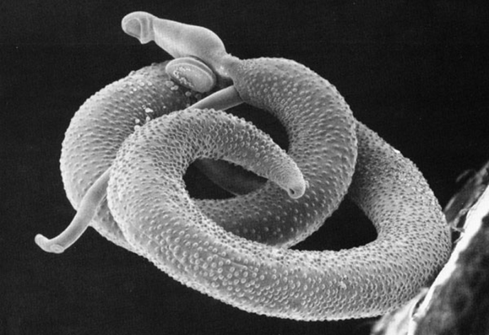

This article originally appeared in Knowable Magazine.
The experiment was a striking attempt to investigate weight control. For six weeks, a group of mice gorged on lard-enriched mouse chow, then scientists infected the mice with worms. The worms wriggled beneath the animals’ skin, migrated to blood vessels that surround the intestines, and started laying eggs.
Bruno Guigas, a molecular biologist at the Leiden University Center for Infectious Diseases in the Netherlands, led this study some years back and the results, he says, were “quite spectacular.” The mice lost fat and gained less weight overall than mice not exposed to worms. Within a month or so, he recalls, the scientists barely needed their scale to see that the worm-infested mice were leaner than their worm-free counterparts. Infection with worms, it seems, reversed obesity, the researchers reported in 2015.
While it’s true that worms gobble up food their hosts might otherwise digest, that doesn’t seem to be the only mechanism at work here. There’s also some intricate biology within the emerging scientific field of immunometabolism.
After two years, those who received 20 worms had lost an average of 11 pounds.
Over the past couple of decades, researchers have recognized that the immune system doesn’t just fight infection. It’s also intertwined with organs like the liver, the pancreas, and fat tissue, and implicated in the progression of obesity and type 2 diabetes. These and other metabolic disorders generate a troublesome immune response—inflammation—that worsens metabolism still further. Metabolic disease, in other words, is inflammatory disease.
Scientists have also observed a metabolic influence of worms in people who became naturally infected with the parasites or were purposely seeded with worms in clinical trials. While the physiology isn’t fully understood, the worms seem to dampen inflammation, as discussed in the 2024 Annual Review of Nutrition.
“We’re never going to cure or treat metabolic disease with worm infections,” says Guigas. They cause unpleasant side effects like nausea, and it would be impractical to dose millions of people with parasites. But worms can be valuable tools for scientists to understand the feedback between inflammation and metabolism. The findings could inspire more traditional, less ick-inducing treatments.
The worms we’re talking about are helminths such as flukes and roundworms.While they’ve largely been eliminated from developed nations, an estimated 1.5 billion people worldwide carry them. They can be dangerous in high numbers, and cause symptoms such as diarrhea and malnutrition in those at high risk, including children and immunocompromised individuals, and during pregnancy.
But for most people, infection with a few worms is pretty benign. “Throughout human evolution, I think, there’s been this nice sort of truce,” says Paul Giacomin, an immunologist at James Cook University in Cairns, Australia. As part of that detente, he says, helminths evolved molecules that tell the human immune system, “I’m not here, don’t worry about me.” In turn, people might have evolved to depend a bit on worms to temper inflammation.

THE WORMS’ GOOD TURNS: Blood flukes like Schistosoma mansoni are another type of worm being investigated for their metabolism-regulating properties. Image by Waisberg / Wikipedia.
Today, metabolic disease is a massive global problem, with obesity affecting an estimated 890 million people. Some 580 million* have type 2 diabetes, which arises when the hormone insulin, which controls blood sugar levels, is in short supply or the body’s cells become insensitive to it.
Links between metabolic disease and worm infection emerged from research on human populations. Studies in Australia, Turkey, Brazil, China, India, and Indonesia showed that people with metabolic conditions such as diabetes were less likely to have helminth infections, and vice versa. “This observation is quite strong,” says Ari Molofsky, an immunologist at the University of California, San Francisco.
Going a step further, scientists observed what happened when they provided deworming treatments. “The overwhelming majority of the studies showed that deworming worsens your metabolic health,” says Giacomin.
Scientists looked to lab mice for additional clues. Molofsky and colleagues, in 2011, reported that when they infected mice on high-fat food with the gut worm Nippostrongylus brasiliensis, the infection improved blood sugar control. Similarly, in Guigas’ study, published in 2015, the worms—blood flukes called Schistosoma mansoni—improved not just weight, but also blood sugar processing. And the worms needn’t be alive: Even molecules collected from crushed worm eggs improved metabolism.
“The parasitic worms are real masters at controlling inflammation.”
The going hypothesis is that metabolic problems kick off a vicious immunometabolic cycle. First, Guigas says, damaged cells in metabolic organs cry for help, releasing molecular signals that call in immune cells. When the immune cells arrive, they morph into forms that promote a type of inflammation called Th1. Th1 responses are good at combating viruses, but they’re the wrong choice here. Th1 can aggravate metabolic problems by impairing insulin manufacture, altering insulin signaling, and amplifying insulin resistance.
Thus, instead of helping, the immune cells cause further stress in the metabolic tissues. So the tissues call in more immune cells—and the cycle repeats.
Worms seem to break the cycle. In great part, that’s probably because their “I’m not here” message causes a different kind of immune response, Th2, that dampens the Th1 reaction and re-normalizes the system. Other mechanisms might also be at work: Worms might reduce appetite; it’s known they can alter gut microbes; and Guigas suspects they can also manipulate creatures’ metabolisms via non-immune pathways.
“The parasitic worms are real masters at controlling inflammation,” says Giacomin, who coauthored an article on helminths and immunity in the 2021 Annual Review of Immunology. Thus, scientists interested in controlling immunometabolic disease might take cues from these wriggly little metabolic masterminds. In fact, researchers have already tested helminths to control inflammation in autoimmune conditions such as inflammatory bowel disease.
The accumulating evidence linking worms to metabolic benefits in animals and people inspired Giacomin and colleagues to conduct a trial of their own. Commencing in 2018, they decided to try the hookworm Necator americanus in 27 obese people who had insulin resistance, putting them at risk for type 2 diabetes. The researchers applied worm larvae in patches on the subjects’ arms; after passing through the skin, the worms would travel through the blood stream, to the lungs, and then to the small intestine. An additional 13 participants were assigned to placebo patches with Tabasco sauce to mimic the itch of entering worms.
N. americanus is a common cause of hookworm infections across much of the world. While most cases are asymptomatic, the time when the worms are attaching to the intestinal wall can cause symptoms like nausea and low iron levels, especially if there are a lot of worms. So the main goal was to determine if the treatment was safe, trying doses of 20 or 40 worms. Many subjects suffered short-term unpleasantness such as bloating or diarrhea as they adjusted to their new intestinal tagalongs, but overall, most did fine.
After 12 months, the people who got hookworms had lower insulin resistance and reduced fasting blood sugar levels. After two years, those who received 20 worms had lost an average of 11 pounds—though not all individuals lost weight, and some gained.
“It was quite convincing that the worms were having some sort of beneficial effect,” says Giacomin. The subjects were convinced too: When the study was over, the researchers offered deworming, but most participants elected to keep their worms.
Giacomin and Guigas hope to identify worm components or invent worm-inspired molecules to produce similar effects without whole parasites. Giacomin cofounded a company, Macrobiome Therapeutics in Cairns, to develop hookworm molecules into treatments. Such medications might be based on the wriggly parasites, but they’d be an easier pill to swallow. 
Lead art: Liz Greene; with images by Ana-Marija Mrkic and Rin Green / Shutterstock
*Correction: As originally published, this article erroneously stated that obesity affects an estimated 890 million people and that another 580 million have type 2 diabetes. In fact, the populations with obesity and the populations with type 2 diabetes are overlapping—so the word “another” has been removed.